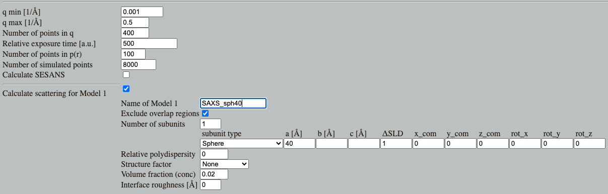
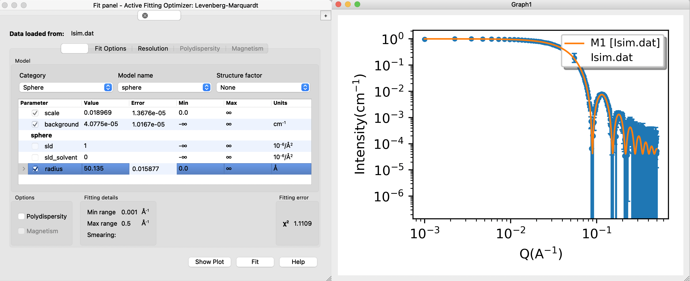
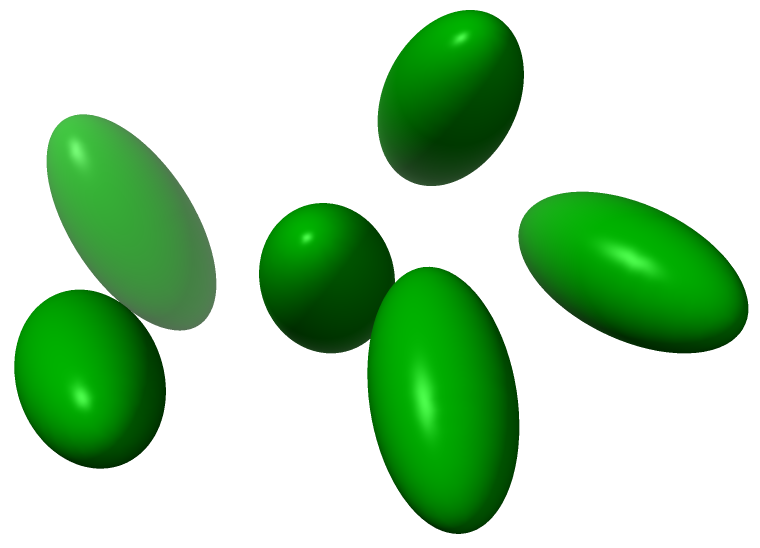
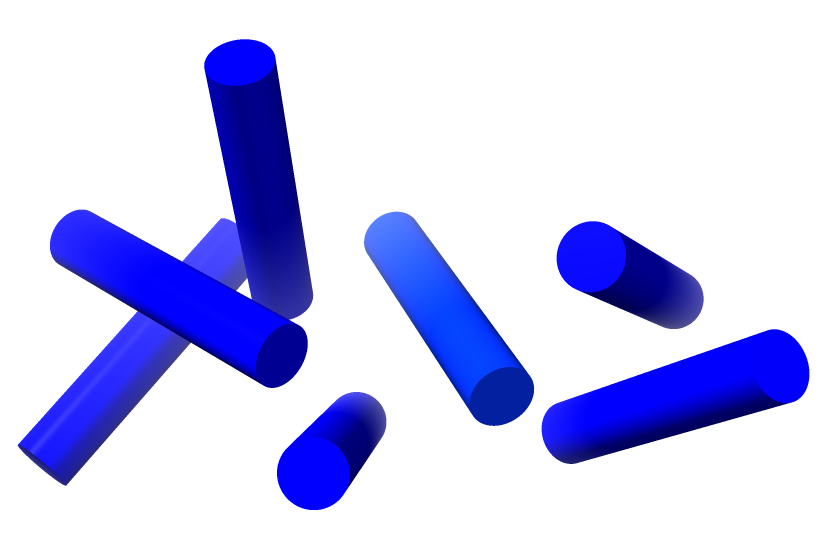

Home
Tutorial: Spheres
Contributors: Andreas Haahr Larsen, Martin Cramer Pedersen, Jacob Kirkensgaard, Viktor Holm-Janas.

The sphere is a basic shape and a good starting point for learning principles in small-angle scattering analysis.
Before you start
- Download and install SasView (on MacOS: you need to install Xcode first)
- If you are new to small-angle scattering, we recommend that you do the Shapes tutorial first.
Learning outcomes
Learn how to fit a geometrical model to SAS data and apply this to answer structural questions about the sample.- Simulate SAS data of spherical particles, and determine which sample contains the larger particles, by visually comparing the curves.
- Describe the difference between the scattering from spheres, ellipsoids and cylinders.
- Fit basic form factors to samples of monodisperse particles.
Part I: Spheres
Go to Shape2SAS, and simulate a sphere with a 40 Å radius. You may have to click on the three lines in the top-left of the window, then "Calculations". Set parameters.
Press Submit. Shape2SAS generates three plots (besides from visualization of the particle):
- A pair distance distribution. This is a useful tool in SAXS and SANS analysis, but will not be used in this tutorial. See tutorial Pair distance distribution, p(r).
- Calculated scattering, normalized. This is the form factor, $P(q)$. It contains information about the size and shape of the particle.
- Simulated scattering, showing what real SAXS or SANS data for that sample may look like, if actually measured.
Try to compare with a smaller or larger sphere (as Model 2 in Shape2SAS). Notice the important inverse relation: larger particles have features at smaller $q$, and vice versa.
Download the data you just simulated: Isim.dat (or use this example data) (right click - save as...). Load the data into SasView and fit with an analytical sphere model
- Guide to basic fitting in Sasview:
- Press "Load data" and select your data.
- "Send data to" and choose "Fitting" in the drop-down menu.
- Your data should appear in the Fit panel (a separate window).
- Choose model category "sphere" from the first drop-down menu. There are many different sphere-like models, choose "sphere" under model name (second drop-down menu).
- Now you have some model parameters. You can click/select those you want to fit.
- Compute/plot gives the model scattering with the default values and without fitting: a plot with data (blue) and model (orange) is shown. The residuals (difference between model and data) are also shown in a separate window.
- Adjust some parameters manually, and press compute again. Try to manually find reasonable values for scaling, background and radius.
- Try changing the value of the radius and notice the important inverse relation: larger radius moves all the features to smaller q values.
- Try to fit the data: check the parameters scale, background and radius, and press "Fit".
- A convergence plot is shown along with the other windows - this shows that the fitting algoritm has converged - you can ignore that.

Does the fitted radius match the input for your simulations (40 Å)? Is the fit "good" - as assessed by visual inspection and the reduced $\chi^2$. This value is displayed in the Fit panel.
Check for correlated parameters
- Correlated parameters:
- Two parameters are (partly) correlated if a change of the scattering curve induced by changing one of these parameters can be (partly) cancelled by changing the value of the other parameter.
- If you fit correlated parameters simultaneously, you will observe high uncertainties on the parameters values.
- The SLD values are correlated (due to Babinet's principle). That is, you can fit the data equally well with different combinations of sld and sld_solvent - as long as the contrast is unchanged. The SLD values are also correlated with the scaling parameter.
- Consequently, if you fit multiple SLD values (and scaling), you will observe large uncertainties on these parameters (example).
- To prevent correlation, you can restrict the fit by fixing parameters. For this reason, sld_solvent is usually fixed, and in this example, you should also fix sld if scaling is fitted.
Part II: Ellipsoids
Simulate and fit scattering from a sample of monodisperse (all the same size) ellipsoids. In SasView, these can be modelled with an ellipsoid of revolution (two radii are the same, one different), or a tri-axial ellipsoid (all radii are different).Note: for the ellipsoid of revolution model in SasView, ensure that you use the right values for R_e (the two identical equitorial radii) and R_p (the polar radius).

randomly oriented ellipsoids of revolution (radii 20,20,40). Figure generated with ChimeraX.
Part III: Cylinders
Simulate and fit the scattering from a sample of monodisperse cylinders.
Randomly oriented cylinder (length 100, radius 10). Figure generated with ChimeraX.
Challenges
- Challenge 1: A sample of discoidal particles (diameter ca 5 nm, as estimated from negative stain electron microscopy) was measured in SAXS at neutral pH (neutral pH data) and pH 5.0 (low pH data). What effect does the pH change have on the particles and their interaction? Tip: always inspect and compare data before you do any modelling. To do this in SasView, load the data, select the data, and under "Plot" press "Create new".
- Challenge 2: You have measured a sample of nanoparticles (SAXS data), what are their shape?
Perspectives
In this tutorial, all samples are perfectly monodisperse. The analysis often become more complex for actual samples due to various factors, including:- Polydispersity in the sample.
- Multiple contrasts in the sample sample, e.g. core-shell particles.
- Interparticle correlations leading to structure factors.
- Aggregation.
- Complex shapes that cannot be described by simple geometric models.
- Mixtures of various conformations or oligomeric states.
- Particle alignment (i.e. the particles are not randomly oriented anymore) leading to anisotropic scattering.
Help and feedback
Help us improve the tutorials by- Reporting issues and bugs via our GitHub page. This could be typos, dead links etc., but also insufficient information or unclear instructions.
- Suggesting new tutorials/additions/improvements in the SAStutorials forum.
- Posting or answering questions in the SAStutorials forum.